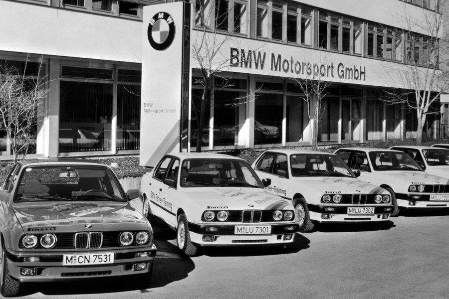

Подразделение, названное BMW Motorsport GmbH, было создано в мае 1972 года решением собрания акционеров концерна BMW. Причиной возникновения компании стал уход из различных гоночных серий заводской команды и сокращение партнёрских отношений с компаниями-клиентами из-за доминирования на соревнованиях специально разработанных для этого машин, таких как Ford Capri RS. Первым гоночным проектом стала BMW 3.0 CSL, она была продана частным владельцам в количестве около 1100 экземпляров; в конце 1970-х были произведены первые модифицированные машины для личного использования гонщиками, подписавшими контракт с BMW. BMW-M1 Piquet 1980 Параллельно с созданием автомобилей инженеры подразделения BMW M работали с двигателями для болидов гоночных серий Формула-2 и Формула-3. В 1977 году открываются подразделения BMW Driver Training и BMW Junior Team. В 1978 в мелкосерийное производство попадает суперкар BMW M1, растиражированный в 400 экземплярах. В 1981 году налаживаются партнёрские связи с командой Формулы-1 Brabham, в 1983 году появляется болид Brabham BT52, на котором в том же сезоне свой второй чемпионский титул завоевывает Нельсон Пике. Собственный завод подразделения под Мюнхеном был открыт в 1988 году. Название BMW Motorsport GmbH было изменено на BMW M GmbH в 1993 году.
BMW History
